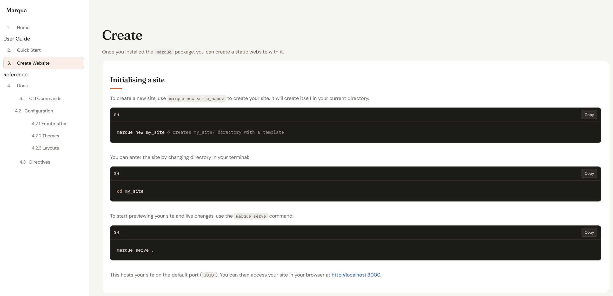

Create
Once you installed the marque package, you can create a static website with it.
Initialising a site
To create a new site, use marque new <site_name> to create your site. It will create itself in your current directory.
marque new my_site # creates my_site/ directory with a templateYou can enter the site by changing directory in your terminal:
cd my_siteTo start previewing your site and live changes, use the marque serve command:
marque serve .This hosts your site on the default port (3000). You can then access your site in your browser at http://localhost:3000.
Architecture of a Marque site
A Marque site is built from a small set of files that define settings, navigation, source content, and output.
my-site/
├── pages/ # .mq source pages (index.mq, 404.mq,docs.mq, docs/cli.mq, etc)
├── layouts/ # local editable layouts copied at scaffold
├── themes/ # local editable themes copied at scaffold
├── static/ # store extra assets here, copied as-is to dist/
├── marque.toml # site config
└── dist/ # generated outputRequired files
If your site is missing either marque.toml, summary.mq, or 404.mq, it will not function properly. These files are required for a valid Marque site.
marque.toml
This is the root config file for your site. It controls global settings such as:
- site title and description
- the layout (topnav / sidebar)
- the theme (default / rustique, etc)
- default page width (markdown body width)
Minimal example:
title = "Marque"
description = "Built with Marque"
layout = "topnav"
theme = "default"
width = 82 # can be a number (percentage) these settings apply to every .mq in your project. they can be manually overwritten individually in any page's frontmatter.
404.mq
404.mq is the fallback page shown when a user tries to access a non-existent URL on your site. It provides a button to create the missing page automatically.
summary.mq
This file defines your navigation order and labels.
A page can exist on disk, but if it is not listed in summary.mq,
it will not appear in nav order.
Example:
# Summary
[Home](index.mq)
Guides # separator, not a link
[Quickstart](quickstart.mq)
[Create](create.mq)
[Docs](docs.mq)
[CLI](docs/cli.mq) # nested under Docs
[Commands](docs/commands.mq) # ^Note: the .mq files listed in summary.mq should exist in your pages/ directory. If they don't, you can create them with the 404 page button.
summary.mq has two display modes: a topnav layout that shows all pages in a horizontal navbar with hover dropdowns for nested pages, and a sidebar layout that shows all pages in a vertical sidebar. You can choose either layout globally or per page.
Required folders
pages/
This is your source content directory.
Each .mq file becomes an HTML page.
Typical page:
+++
title = "My Page"
nav = "my-page"
+++
# My Pagestatic/
Put images, downloads, and other static assets here.
Marque copies this folder into output as-is.


dist/
This is generated output from marque build.
It contains the static HTML/CSS/assets you deploy.
Build command:
marque build .After build, upload dist/ to any static host.